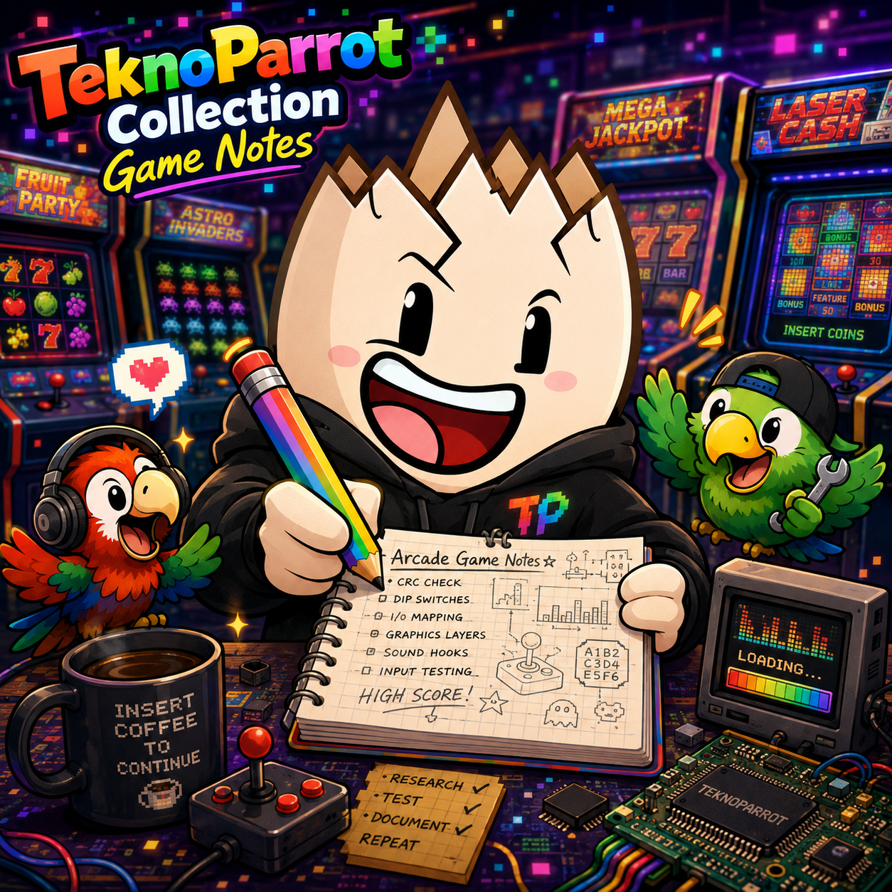

Eggman's TeknoParrot Collection
Game Notes & Compatibility Reference
All Statuses
All Loaders
All GPUs
NVIDIA OK
AMD OK
Intel OK
Has GPU Issues
Has GPU Data
✕ Clear
Game
Arcade System
Loader
Status
GPU